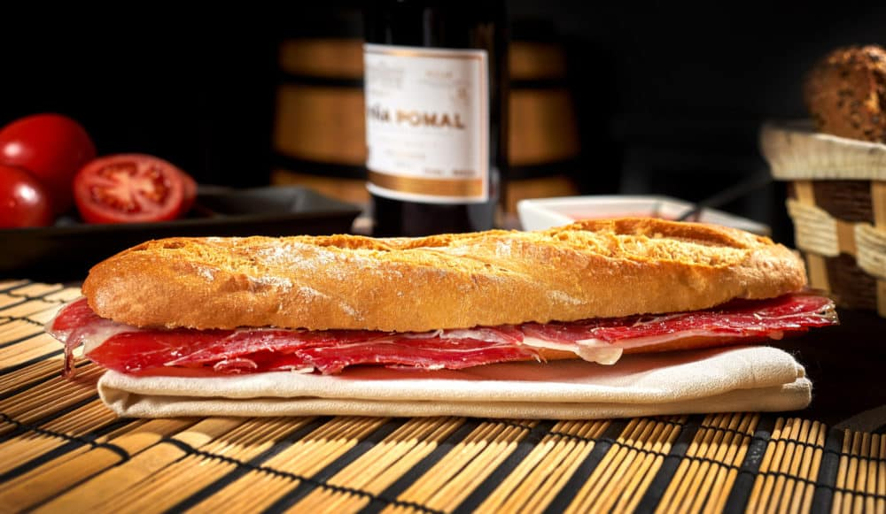

Bocadillo de Jamon Iberico

Puede parecer que hacer un bocadillo de jamón ibérico no tiene mérito,
pero no es tan fácil como parece hacer el mejor bocadillo de jamón
ibérico,
así que nosotros vamos a intentarlo. Lo primero, como daréis por hecho, es
tener un buen jamón ibérico, claro.
Ingredientes
- 1 pan de cristal bollos
- 1 Tomate maduro rallado
- Aceite de oliva virgen extra
- Jamon Iberico cortado a cuchillo
Pasos:
- Tostar el pan de cristal en plancha o tostador.
-
Pintar ligeramente con aceite de oliva virgen extra no muy intenso en
base y tapa.
-
Esparcir una capa fina de tomate rallado con una cuchara en base y tapa.
-
Disponer el jamón ibérico sobre la base, cubrir con la tapa y disfrutar.